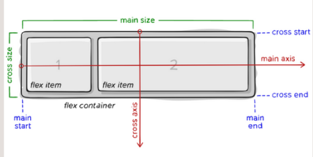
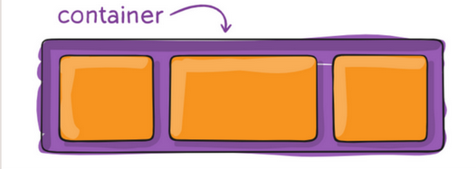
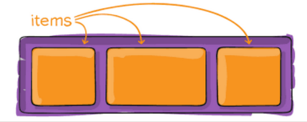
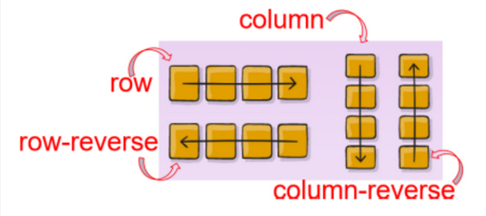
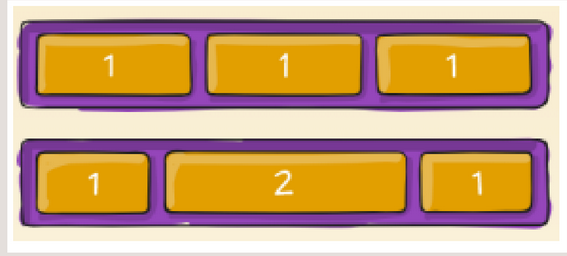

Conceitos básicos
alogumas propriedades devem ser definidas no container (elemento pai, conhecido como flex container) enquanto outros devem ser deifinidos nos filhos (os flex items).
- main axis
- eixo principal de um container
- main-start | main-end
- Começo e fim de onde os flex itens são colocados
- main size
- O que estiver na dimensão principal (largura ou altura) é o tamanho principal do item
- cross axis
- eixo perpendicular ao eixo principal (é chamado de eixo cruzado) sua direção depende da direção do eixo do main axis. (eixo principal)
- cross-start | cross-end
- basicamente o meso que o main start e cross end mas na vertical, cruzando. as linhas flexiveis são prenchidas comitens e colocadas no conteiner, começando no lado da ponta cruzada do container flexivel e indo em direção ao lado da ponta cruzada.
- cross size
- a larrgura ou altura de um item fflexivel, o que estja na dimensão cruzada, é o taanho cruzado do item.
propriedades Flexbox
a seguir, a nomenclatura:
- 1. container
- elemento que contém outrops elemntos. 'considerado o elemento parent (pai) 
- 2. children
- são os itens internos dentro de um container, ou conforme a analogia dos próprios nomes, são filhos do elemento pai. 
Props. do Parent
- dislay
- define um flex container, pode ser flex ou inline-fex, permitindo um conteúdo flexível para tods os seus filhos diretos.
- flex-direction
- Estabelece o eixo principal, definindo a direção que os flex items são colocados no flex container. Os possiveis valores para esta propriedade são row, row-reverse, column ou column-reverse. 
- flex-wrap
- por padrão os itens tentaram se ajustar em uma unicalinha, mas é possvel moldar isso por meio do flex wrap.
- nowrap
- É o padrão e permit qu todos os itens fiquem em uma só fileira.
- wrap
- Os itens flxiveis serão quebrados em várias linhas, e cima para baixo.
- wrap-reverse
- Mesma coisa que o wrap, mas ao coltrário (de baixo para cima)
- align-items
- Qual vai ser omodo padrão de como os itens flexiveis são dispostos.
- justify-content
- Mostra como vai ser o alinhamento dos itens em relação à linha principal.
- align-content
- Alinha as linhas de um flex container quando há espaço sobrando no eixo cruzado.

para definir quebras de linhas podmos usar:
flex-wrap:wrap-reverse
}

Exemplo:
align-items: flex-start
}

Há tmbém duas propriedades adicionais que podem ser usadas "safe" e "unsafe". com o safe, inpendentemente do tipo de posicionamnto, não será possivel empurrar um elemento para que ele fique fora da tela
justify-contnt: flex-start;
}

Essa propriedade só tem efeito m containeres flexiveis e váias linhas, one flex-flow é efinio como wrap ou wrap-reverse. um container de linha unica não refletirá o conteudo de alinhamento.
Props do children
- order
- a propriedade ordem mostra a ordem em qu os itens flexivis aparcem no flex container.
- flex-grow
-
define a capacidade de um item flexivel crescer, deetermina a quantidade de espaço disponivel denrtro do flex container que o item deve ocupar. Quanto maior o númro definido, mais espaço ele irá ocupar:

Para que todos os elementos estejam com o mesmo espaço, é necessário definir o flex grow como 1, se for definido como 2, ele tentara ocupar o dobro do espaço.
.item { flex-grow: 2; }
- flex-shrink
-
Define o quanto um elemento pode encolher, se for definido como 3, terá a capacidade de encolher 3x mais que os outros elementos.
.item { flex-shrink: 3; }O padrão ppr definição é 1.
- flex-basis
-
O tamanho padrão do item antes que o espaço seja distribuido. Pode ser 20%, 200px, 5 rem, auto, max-content, min-content, fill e fit-content.
.item { flex-basis: fill; }
- flex
-
flex-grow, flex-shrink e flex-basis em uma só propriedade, respectivamente. As uas primeiras são opcionais. Abaixo, o flex-grow=2, flex-shrink=3 e flex-basis=10%
.item { flex 2 3 10% }
- align-self
-
Permite qu o alinhamento padrão (Ou o efinido por align-items) seja substuido por itens flexives individuais. Pode ser definido como auto, flex-start, flex-en, center, baseline ou stretch.
.item { align-self: flex-start; }